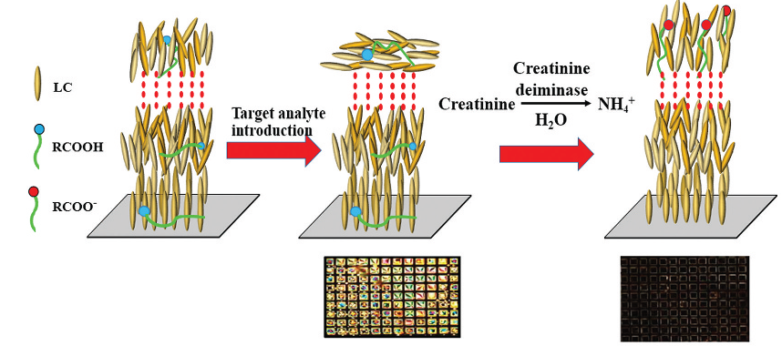
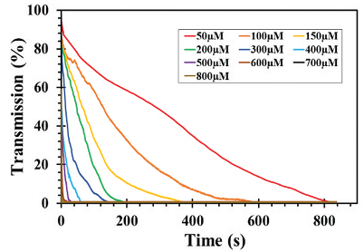
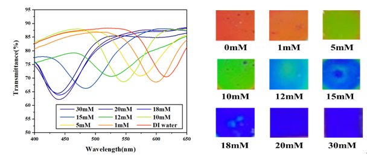
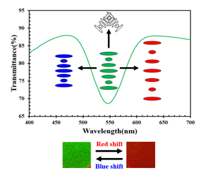
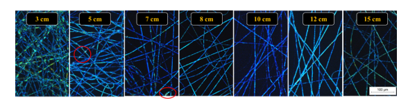
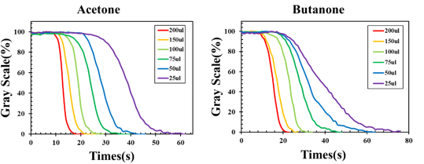
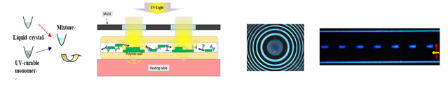
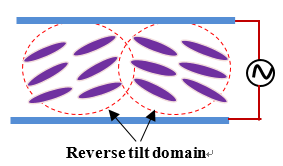
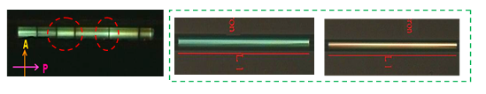
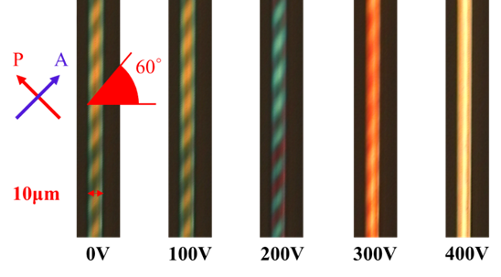

主要研究方向與主題著重在液晶技術應用與光纖元件的開發，積極將液晶材料延伸應用於可調式光電元件、新穎光纖元件與感測器等領域。
- 液晶生化感測器-Liquid crystal-based Biosensor
- 液晶光纖干涉元件-liquid crystal-based fiber Mach-Zehnder interferometer
- 藍相液晶/高分子複合材料於在光電元件應用的開發 - Blue phased liquid crystal/ polymer composites-based photonic devices (Fresnel lens、grating、fiber grating)
- 液晶分子在中空光纖內的配向技術與應用- Alignment technique of LCs inside the closed hollow core fiber
- 可調液晶微透鏡與光束偏轉器的技術開發-Tunable liquid crystal microlens, beam deflector
向列型液晶 (Nematic liquid crystal)、膽固醇液晶高分子(Cho;esteric liquid crystal polymer)、電紡絲膽固醇液晶纖維膜(electrospun-CLC film)










